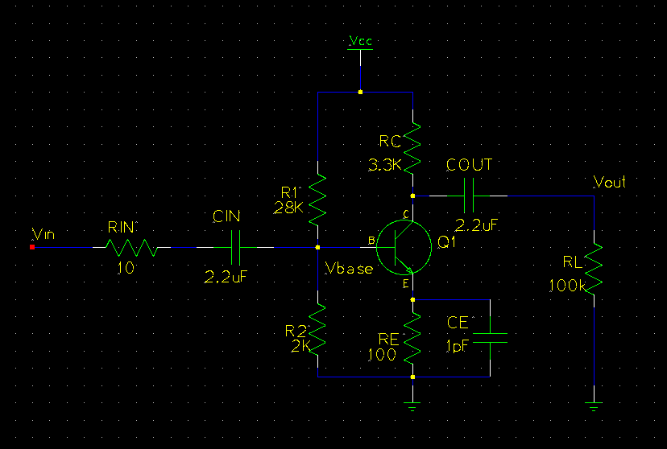
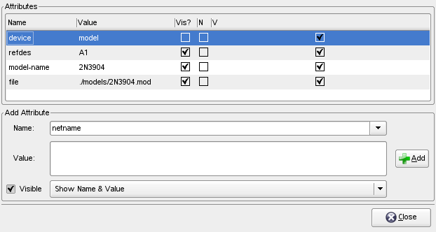

It is possible to use gschem to make circuit diagrams which can then be simulated with ngspice. The advantage is that you can iteratively design and simulate before you commit to fabrication. The purpose of this tutorial is not to teach the details of SPICE but rather to work a very simple example so that the required steps are made clear. More detailed documents on both Spice and gEDA can be found at:
There is a FAQ in the wiki that may be of help: faq-simulation
This tutorial is based on the example 'TwoStageAmp.sch' in the examples which ship in gEDA's documentation and constructs the first half of that example step by step.
It is assumed that you are able to construct schematics with gschem. If you are unsure how to do this please visit gsch2pcb_tutorial. So let's start by making a project directory 'simpleSPICE' and creating a schematic file named
'simplespice.sch' in that directory.
Use gschem to build up a schematic that looks like:

Note that three named nets have been created, “Vin”, “Vout”, and “Vbase”. Although this is not necessary, it is an easy way to keep track of important points in the circuit. Naming nets is done by editing either by right-clicking or by hitting 'ee' while a net is selected; then just add the attribute 'netname' and give it an appropriate name. Although we now have a circuit to simulate, we need to add some SPICE specific information before we can get any results.
There are four things that we will need to add to the schematic to make it suitable for simulation. We must include an input signal, describe the properties of the transistor, explicitly define Vcc, and add some lines to the SPICE file. When all these things are done
the schematic will look like:

The input signal is added by choosing 'SPICE simulation elements→vac-1.sym' from the components menu and, after placing the device, editing its properties to read:

Notice that the 'value' is a string that will be read by SPICE. You learn about SPICE syntax in the links given above.
Vcc is set in basically the same way except we choose 'SPICE simulation elements→vdc-1.sym' from the components menu. Its properties should be edited to read:

The transistor setup is a bit more complicated. We must first have access to a SPICE model for the transistor of interest. This can usually be found on the manufacturer's website or the part's datasheet, but it may need to be modified to work with your favorite simulator. The easiest way to get the model is from spicelib. For this example we will consider the ubiquitous 2N3904. Which has the following model:
.model 2N3904 NPN(Is=6.734f Xti=3 Eg=1.11 Vaf=74.03 Bf=416.4 Ne=1.259
+ Ise=6.734f Ikf=66.78m Xtb=1.5 Br=.7371 Nc=2 Isc=0 Ikr=0 Rc=1
+ Cjc=3.638p Mjc=.3085 Vjc=.75 Fc=.5 Cje=4.493p Mje=.2593 Vje=.75
+ Tr=239.5n Tf=301.2p Itf=.4 Vtf=4 Xtf=2 Rb=10)
* Fairchild pid=23 case=TO92
* 88-09-08 bam creation
Make a sub-folder named 'models' in our project folder 'simpleSPICE' and make a file named '2N3904.mod' in that folder and fill it with the model text given above. Make sure that there is a newline at the end of the file, this is important so that when the final SPICE file is created everything will be on its own line. Okay, now that we have a model for the transistor we have to apply it. Edit the transistor properties to read:

Now we also need to inform gschem of the model file we created. This is done by adding a 'spice-model-1.sym' symbol to the schematic.
Edit its properties to read:

Okay, there are two more symbols to add. The first is 'spice-include-1.sym' which will include a text file which describes the SPICE simulation you may want to run and the other is 'spice-directive-1.sym' which allows additional lines to be added to the SPICE file.
The properties of these symbols can be set as:


Congratulations! We now have a schematic that is ready for simulation.
Although the schematic is in place, we still need to write out what the simulation will do. This information will be written in the './Simulation.cmd' that was referenced in the include symbol added in the last section. For now, create a file './Simulation.cmd'
and make it read:
.OP
.AC DEC 20 1Hz 100MegHz
* .DC VINPUT 0 5 .01
* .DC VINPUT 1 2 .01
.plot ac v(Vout) v(Vin)
.print ac v(Vout) v(Vin)
Which does one AC analysis while two lines for DC analysis are commented out. Then both Vout and Vin are plotted as well as having their numerical values printed. As mentioned previously, SPICE can be learned from the links given above.
Now that we have described the simulation we want done, open a terminal, move to the 'simpleSPICE' directory and type the command:
gnetlist -g spice-sdb -o spice.net simplespice.sch
to produce the SPICE file 'spice.net'. Now the simulation can be run in batch mode by typing:
ngspice -b spice.net > result.txt
which will spew a great deal of text to 'result.txt'. The file should include the numerical output we requested as well as a crude ascii plot of the results. Note that the 10mV input signal has been amplified to about -280mV over a wide frequency range. If you want to veiw graphical plots ngspice can be operated in interactive mode by removing the -b option. The ngspice website describes this in more detail. In any event, we now have the simulation results in a nice text format suitable for reading with a script, perhaps something written in python or octave, for further graphing or analysis.